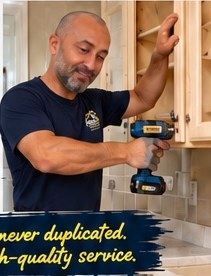
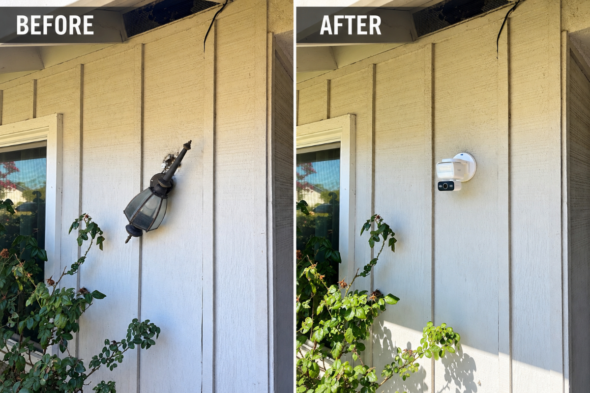
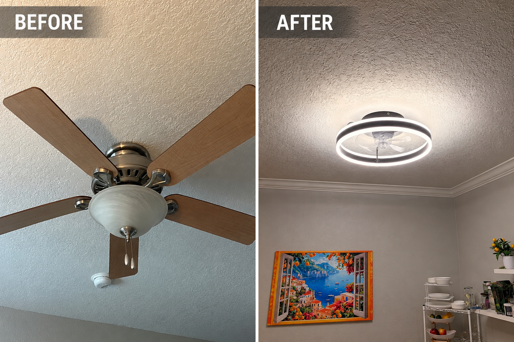
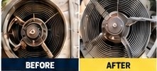
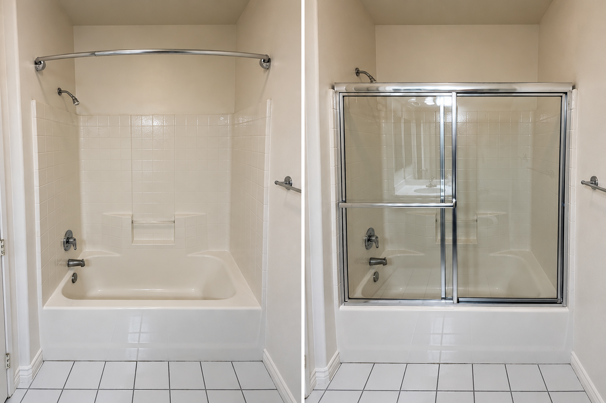

Plumbing Repairs
Faucets, toilets, garbage disposals, water heaters, water lines, filters, drains and more.
From plumbing and electrical repairs to HVAC, installations, drywall repairs, and those small projects you've been putting off — PrimeFix Handyman Services is here to get it done right.
Quality repairs. Reliable service. For your home.
Faucets, toilets, garbage disposals, water heaters, water lines, filters, drains and more.
Outlets, switches, lighting, ceiling fans, range hoods, recessed lighting and more.
AC troubleshooting, capacitor replacement, fan motors, filters and more.
Drywall, doors, trim, shelves, blinds, screens, handrails and furniture assembly.
Fixtures, appliances, faucets, lighting, ceiling fans, shelving, mailboxes and more.
Keep your home running smoothly with routine maintenance and inspections.
Decades of hands-on experience.
We specialize in residential repairs. No project is too small.
Careful work and attention to detail.
Proudly serving South Orange County.
PrimeFix is built around personal service, honest communication, quality workmanship, and treating every customer's home like it matters — because it does.
My goal is to provide reliable repairs without making small jobs feel like a big hassle.

Small repairs. Big difference.

Light replacement

Ceiling fan replacement

HVAC fan repair

Shower Doors
What Customers Are Saying
Jose is fantastic! He's now our go-to guy for everything. He recently updated our kids' closet and did an amazing job: super professional, right on time, and incredibly helpful throughout. He's also fixed our dishwasher and painted our walls, and each time goes above and beyond what's asked. Reliable, skilled, and a pleasure to work with! Highly recommend him for anything around the house. Thank you Jose! Sarah
I hired Jose to fix my bidet and toilet seat. He responded quick and also came the same evening after a full day of job he had and fixed the issue. Instantly . Jose is a great Handyman, plumber and I know he does many other job. Highly recommend him.
<Gilda
Have a question? Contact PrimeFix →Proudly serving homeowners throughout greater South Orange County.
Call or text PrimeFix today for a free estimate.